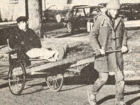

Profiles
Briefs on Tom Hatcher, Harlow, Culpepper, Sanderson and Cumbie, John Long, Connie Serrett and Betty Strong.
By the Mother Earth News editors
May/June 1981
In celebration of little-known Mother-type folks from all over
by TOM HATCHER: TIMELY TAXI
When Tom Hatcher came to the conclusion-about three years back-that Kalamazoo, Michigan was sorely in need of an alternative taxi service, he knew just what to do to remedy the situation: Tom scrounged up some wood scraps and a couple of old bicycle tires, and put together the city's first rickshaw taxicab . . . for a total investment of only $20!
The novice cabby managed to support himself, through his first summer in business, on an average income of $1.40 per hour. . . which he earned by both transporting passengers and selling four handbuilt rickshaws (he assembled them at a cost of just $10 per unit). The carriers were snatched up by a collector, two prospective cabbies, and a farmer who found the two-wheeled device excellent for hauling firewood.
This summer Tom plans to turn his rig into a roving rickshaw (the seat of the vehicle pulls down to form a sleeping platform). He'll set out toward the Mississippi River . . . dividing his time between touring and taxiing. Even though Hatcher could head for the big city-where traffic jams and transit strikes might provide moneymaking opportunities-he prefers to rickshaw for pleasure and isn't much concerned with profit. Tom's only advice to those interested in taking up his trade is this: "Avoid steep hills and long rainstorms . . . and-above all- keep a good sense of humor! "- GlennR. Meyers.
HARLOW, CULPEPPER,SANDERSON, AND CUMBIE: THE GREAT AMERI-CAN ROAD RALLY
Four enthusiastic young instructors from the Houston Independent School District's Outdoor Education Center in Trinity, Texas spent this year's semester break spreading the word on recycling . . . by driving across the country in a 1979 Plymouth Horizon, using gas money earned exclusively from the sale of alu minum cans accumulated along the way.
The team-Roberta Harlow, John Culpepper, Karen Sanderson, and David Cumbie-took a mere ten days to complete their 3,285-mile jaunt from Kitty Hawk, North Carolina to San Diego, California . . . and collected over 500 pounds of cans (or approximately 10,000 metal containers!) en route. Recycling centers paid an average of 280 per pound for the aluminum . . . and the group earned a total fuel bankroll of $133.98.
The Texas teachers-who urged automobile clubs and civic organizations that they encountered in the course of the trip to sponsor similar state-wide recycling road ralliesintend to incorporate their experience into classroom instruction on energy conservation, in the hope that the story will inspire students to devise (and carry out!) recycling ventures of their own.- CK.
JOHN F. LONG: SOLAR SCHEMER
John F. Long is a Phoenix, Arizona builder with some 35,000 homes to his credit . . . and, for sometime now, the innovative designer has been dedicating his talents to the development and application of residential solar electricity. (See "The 'Home of the Future' May Be Here Today", on page 122 of this issue.)
John believes that it's time for the building industry to come to terms with the energy crisis. "We must focus on construction techniques that significantly reduce dependence on nonrenewable resources," he says. Suiting his actions to those words, Long has worked up a master plan for a 20,000-acre community to be located 20 miles north of Phoenix. The development-as envisioned nowwould include homes appropriate for every age and income group, with all the structures making use of solar electric power. In addition, the community will be provided with its own water and sewage recycling systems ... and incorporate large desert "preserves".
Long's building innovations are certain to have an effect on the future of the industry . . . in fact, John is clearly demonstrating that largely energy self-sufficient construction can be practical today.- Robert F. Crozier.
CONNIE SERRETT AND BETTY STRONG: COUNTRIFIED COSMETICS
What began-two generations ago-as a family custom has grown into a burgeoning business venture for Connie Serrett and her mother Betty Strong: The women produce herbal cosmetics for retail sale.
To date, the mother-daughter team has marketed a clay/mint facial masque and an herbal skin moisturizer (they are available, in two-ounce jars, for $4.95 each) under the brand name "Fair Hill". The duo's offerings will soon include a hair rinse, an under-eye cream, a scented lip balm, a cleanser for oily skin, and an afterbath splash, as well. (To order either the masque or the skin conditioner, write Fair Hill Farm, Dept. TMEN, Long Point Road, RD 1, Penn Yan, New York 14527.) All of the herbs used to prepare the cosmetics-which include comfrey, chamomile, rosemary, sage, and various mints-are grown organically at Fair Hill Farm . . . and the essential oils that are numbered among the ingredients are also extracted from homegrown plants.- Ed Webber.
IN BRIEF...
There are two thriving bagpipe businesses in the tiny town of Petersburg in Rensselaer County, New York: Invermark College of Piping, founded in 1981 by DONALD FRASER LINDSAY and his father JAMES LINDSAY, is the only institution in North America devoted solely to instruction in the art of bagpiping . . . and the Cushing Bagpipe Company, established by Mark Cushing in 1974, is one of only about a dozen bagpipe-producing firms in the world today.
In 1973 ANDY LIPKIS formed a Los Angelesbased organization called TreePeople . . . also known as the California Conservation Project. The group's objective was to replenish the Golden State's mountain woodlands with smogtolerant seedlings . . . and, within just six short years, the association of dedicated environmentalists managed to provide southern California with an estimated 22,000 planted trees.
DR. ANTHONY PROVENZANO has been spending his time researching a possible addition to the traditional backyard vegetable plot: small-scale fish gardens. The Old Dominion University professor-who has been studying various species of fish to find those that are best suited to backyard farming-is perfecting a system of plastic swimming-pool aquariums that can be installed and equipped for under $500.- JV.
|
 |
 |
|